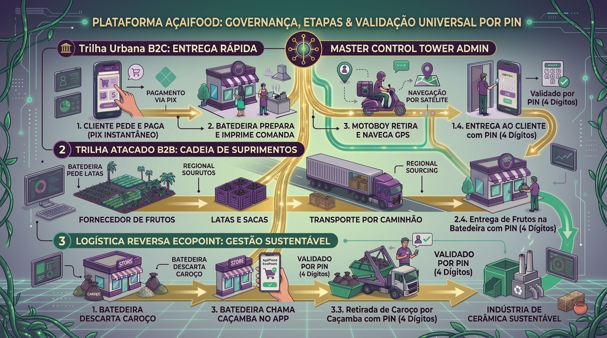

Validação Universal por PIN de 4 Dígitos nos 3 Momentos Críticos de Entrega e Coleta Física

O cliente informa o PIN de 4 dígitos na porta. O motoboy digita no app para concluir a corrida.
Após descarregar e conferir as latas/sacas na loja, a Batedeira informa o PIN de 4 dígitos ao motorista do caminhão.
Ao carregar os sacos de caroço no caminhão caçamba, a Batedeira valida o PIN de 4 dígitos com o operador da caçamba.